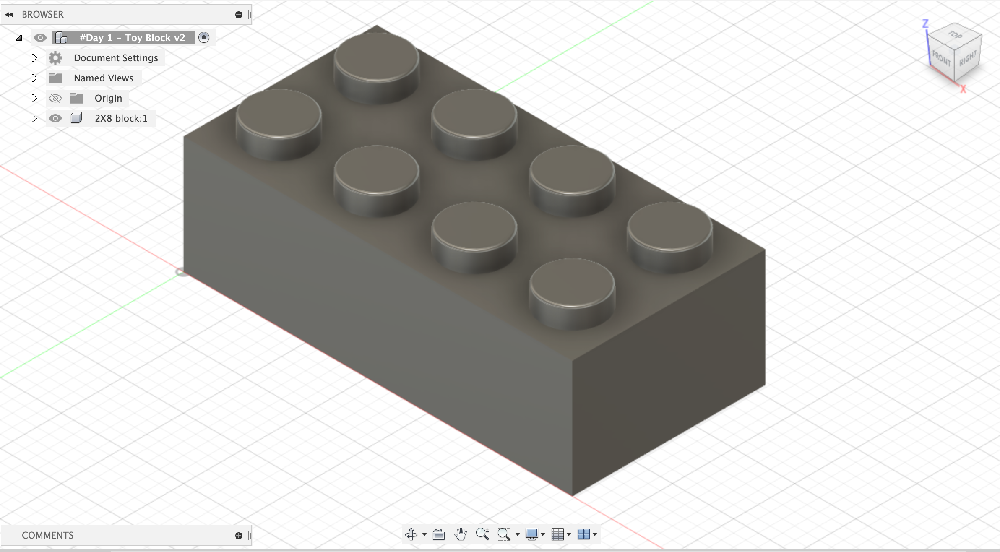
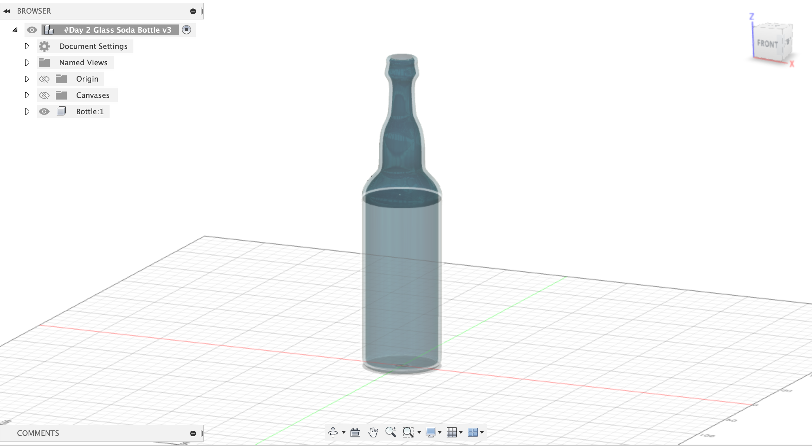
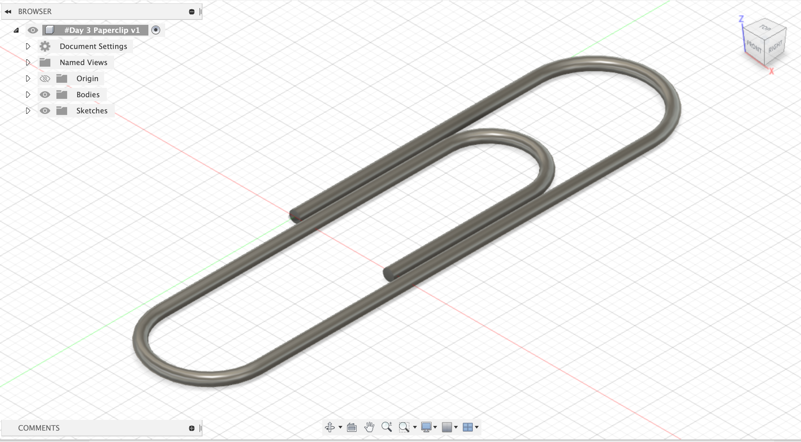

<br>
#### <h1>Week 2: Laser Cutting </h1>
<br>
<br>
/////////part 1//////////// <br>
Learning 3D modeling in Fusion 360
<br><br>
I've worked with generative 3D geometry before, but have never tried to manually scuplt a 3D structure from sratch.
so the learning process for me in this week's assignment has been quite challenging.
I followed a beginner tutorial sereis to start modeling some simple 3D objects while learning different basic interface functions.
Hope through this semester and a lot more practice, I can ultimately be able to conceptulzie and model more complex structures on my own.
<br>
Obj1 <br>

<br>
Obj2 <br>

<br>
Obj3 <br>

<br>/////////part 2////////////<br>
DIY Electromagnetic mic
<P>
I've been interested in electromagnetic sounds for a while and always wanted to build my microphone.
For the design part, I followed an opensource mic project to gather all the mateirals I need for building it.
I then used the laser cutter to cut a 3mm thick Arcrylic sheet into different pieces and later assembled them with some M3 screws and spacer.
The circuitry part for this microphone is relatively simple. I just need to solder two ends of a copper wire loop conncted to the two signal channels of a standard XRL microphone cable.
<br>
<br>
<br> Here are images from the cutting process. <br>
<img src="laser-print0.jpg" style="width:500px;height:600px;">
<br>
<br>
<br>
<br>
<img src="laser-print1.jpg" style="width:500px;height:600px;">
<br>
<br>
<br>
<br>
Here is a video demo showing some random electronic signals captured in a workspace:
<br>
<br>
<video width="640" height="480" controls>
<source src="mic-test.mp4" type="video/mp4">
Your browser does not support the video tag.
</video>
<br>
</P>
<br>
<p> I will probably make some changes in the next iteration:
<ul>
<li>more copper wire turns - more copper wires will increase the signal sensitivity </li>
<li>increase the case size </li>
<li> add a small gap between the cooper wire loop and the handle so that the cable can be more organized and clean</li>
</ul>
</p>
Back to [Home](../index.html)